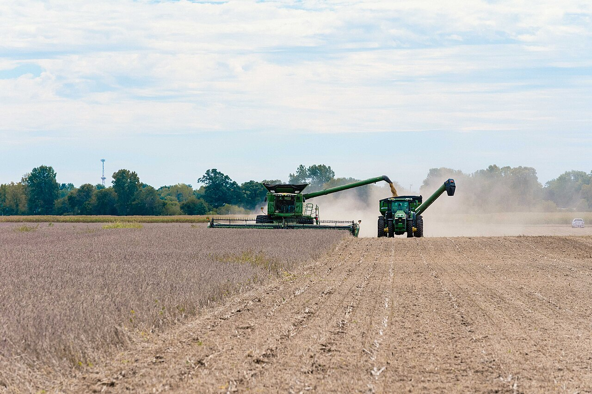

GRIEVANCE X ◆ ECONOMIC STEWARDSHIP
He has thrown American farm exports into uncertainty, requiring public relief for losses from disrupted trade.
THE RECORD SHOWS
U.S.–China tariff retaliation sharply reduced agricultural trade, and Washington allocated billions to help farmers weather market and input-cost disruptions.

Reuters reported USDA figures showing 2025 U.S. agricultural exports to China fell 65.7% year over year to $8.4 billion during the tariff conflict. USDA announced $11 billion in bridge payments for farmers, while the administration later announced additional harvest-fuel relief amid higher diesel costs. Diplomatic negotiations subsequently restored some shipments. Crop prices, energy markets, and farm income have multiple drivers, so not every difficulty can be attributed to a single tariff decision.
A DOCUMENTED SEQUENCE
3 MILESTONES- 2025Retaliatory U.S.–China tariffs severely disrupted American agricultural shipments.
- February 2026Reuters reported near-record government payouts even as farmers faced another difficult income year.
- May–October 2026Negotiations restored some agricultural exports while new federal farm assistance was announced.